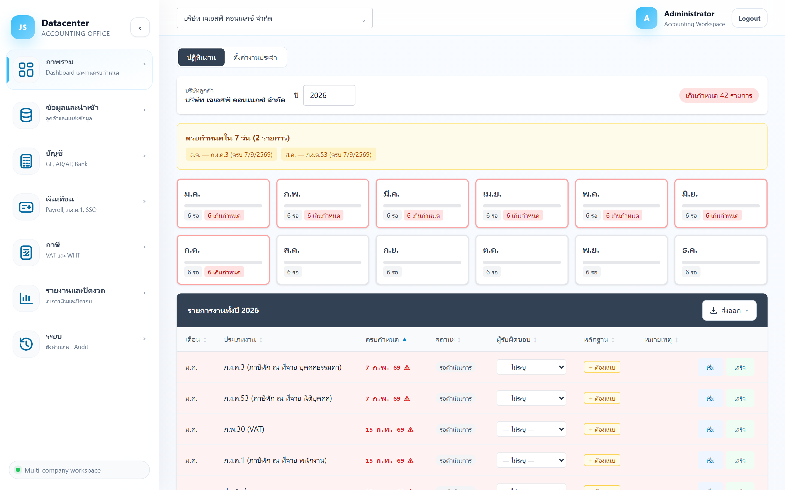
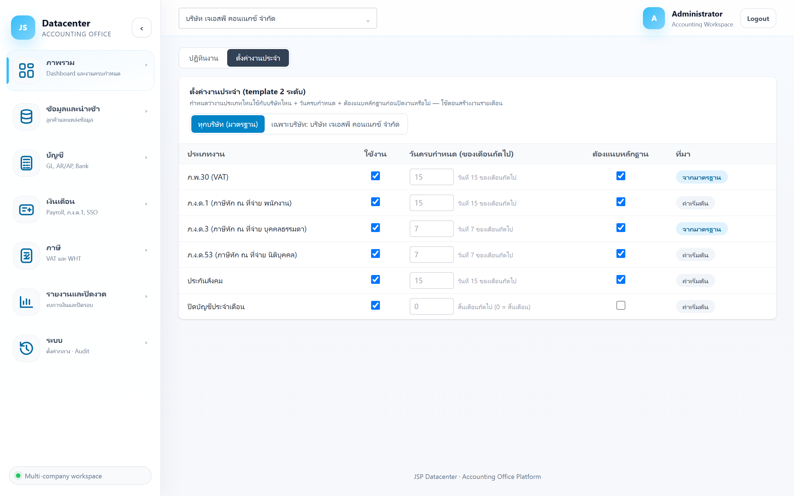

ปฏิทินงาน (งานประจำ / Compliance)
ปฏิทินงานที่ต้องยื่นทุกเดือนของบริษัทหนึ่ง ๆ — ภ.พ.30 · ภ.ง.ด.1/3/53 · ประกันสังคม · ปิดบัญชี พร้อมวันครบกำหนดและสถานะรายงาน ใช้เป็นรายการเช็กว่าเดือนนี้ทำครบหรือยัง
Dashboard = ดูภาพรวมและปิดงานเร็ว ๆ · ปฏิทินงาน = ที่ที่ สร้างงานของเดือน และ ตั้งค่าว่าบริษัทนี้ต้องยื่นอะไรบ้าง
1. การเข้าใช้งาน
- เลือกบริษัทลูกค้า ที่แถบด้านบน (หน้านี้ทำงานทีละบริษัท)
- เปิดเมนู ภาพรวม → ปฏิทินงาน
- เลือก 1 ใน 2 มุมมอง: ปฏิทินงาน หรือ ตั้งค่างานประจำ
2. มุมมอง “ปฏิทินงาน”

แถบด้านบน
| ส่วนที่แสดง | คำอธิบาย |
|---|---|
| บริษัทลูกค้า | ชื่อบริษัทที่กำลังดู (เปลี่ยนที่แถบเลือกบริษัทด้านบนสุด) |
| ปี | ปีที่ต้องการดู (ค.ศ.) พิมพ์เปลี่ยนได้ |
| เกินกำหนด N รายการ | ป้ายแดงมุมขวา — แสดงเมื่อมีงานเลยกำหนด นับรวมทั้งปี |
กล่อง “ครบกำหนดใน 7 วัน”
กล่องสีเหลืองที่รวมงานใกล้ครบกำหนดไว้ให้ดูก่อน — แต่ละป้ายบอก เดือน — ประเภทงาน (วันครบกำหนด) ถ้าไม่มีงานใกล้ครบกำหนด กล่องนี้จะไม่แสดง
การ์ด 12 เดือน
แต่ละการ์ดคือ 1 เดือน — คลิกเพื่อกรองตารางด้านล่างให้เหลือเฉพาะเดือนนั้น (คลิกซ้ำเพื่อยกเลิกการกรอง)
| สิ่งที่เห็นบนการ์ด | ความหมาย |
|---|---|
| N รอ | จำนวนงานที่ยังไม่เสร็จของเดือนนั้น |
| N เกินกำหนด | จำนวนงานที่เลยกำหนดแล้ว (ป้ายแดง และกรอบการ์ดเป็นสีแดง) |
| แถบความคืบหน้า | สัดส่วนงานที่เสร็จแล้วของเดือนนั้น |
| ปุ่ม “สร้าง” | แสดงบนการ์ดของเดือนที่ ยังไม่มีงาน — กดเพื่อให้ระบบสร้างรายการงานของเดือนนั้นตามที่ตั้งค่าไว้ |
ต้องกด สร้าง ของเดือนนั้นก่อน งานถึงจะปรากฏ — ถ้าเปิดปฏิทินแล้วว่างเปล่าทั้งปี แปลว่ายังไม่เคยสร้างงานให้บริษัทนี้ ไม่ใช่ว่าไม่มีงานต้องยื่น
ตารางรายการงานทั้งปี
| คอลัมน์ | ความหมาย |
|---|---|
| เดือน | เดือนของงาน (กดหัวคอลัมน์เพื่อเรียงได้) |
| ประเภทงาน | ภ.พ.30 (VAT) · ภ.ง.ด.1 · ภ.ง.ด.3 · ภ.ง.ด.53 · ประกันสังคม · ปิดบัญชี |
| ครบกำหนด | วันครบกำหนดยื่น — เลยกำหนดแล้วจะเป็นตัวหนาสีแดงพร้อมสัญลักษณ์ ⚠ |
| สถานะ | ดูตารางสถานะด้านล่าง |
| ผู้รับผิดชอบ | ผู้ที่ถูกมอบหมายงานนี้ (— ถ้ายังไม่ระบุ) |
| หมายเหตุ | บันทึกเพิ่มเติมของงานนั้น |
| ปุ่ม เริ่ม / เสร็จ | เปลี่ยนสถานะงานได้ทันทีจากตาราง |
| สถานะ | ความหมาย |
|---|---|
| รอดำเนินการ | ยังไม่เริ่มทำ |
| กำลังดำเนินการ | เริ่มทำแล้ว |
| เสร็จสิ้น | ยื่นเรียบร้อยแล้ว |
| เกินกำหนด | เลยวันครบกำหนดและยังไม่เสร็จ |
กดปุ่ม ส่งออก มุมขวาบนของตารางเพื่อบันทึกรายการงานทั้งปีเป็น Excel / CSV / PDF
3. มุมมอง “ตั้งค่างานประจำ”
กำหนดว่าบริษัทนี้ต้องยื่นงานประเภทไหนบ้าง และครบกำหนดวันที่เท่าไร — ค่าเหล่านี้ถูกใช้ตอนกด “สร้าง” งานรายเดือน

| คอลัมน์ | ความหมาย |
|---|---|
| ประเภทงาน | งานประจำ 6 ประเภทที่ระบบรองรับ |
| ใช้งาน | ติ๊กถ้าบริษัทนี้ต้องยื่นงานนั้น — ปิดได้ เช่น บริษัทที่ไม่ได้จด VAT ก็ปิด ภ.พ.30 ทิ้ง |
| วันครบกำหนด (ของเดือนถัดไป) | วันที่ครบกำหนดยื่นของงานเดือนนั้น (นับเป็นวันที่ของเดือนถัดไป) — ปล่อยว่างเพื่อใช้ค่ามาตรฐาน |
| ที่มา | บอกว่าค่าที่ใช้อยู่มาจากค่ามาตรฐานกลาง หรือถูกตั้งเฉพาะบริษัทนี้ |
| คืนค่ามาตรฐาน | ลบค่าที่ตั้งเองทิ้ง กลับไปใช้ค่ากลาง |
ระบบมีค่ามาตรฐานกลางให้อยู่แล้ว หน้านี้ใช้ ปรับเฉพาะบริษัทที่ต่างจากมาตรฐาน — บริษัทส่วนใหญ่ไม่ต้องแตะเลย
งานของเดือนที่สร้างไปแล้วจะไม่เปลี่ยนตาม — ถ้าต้องการ ต้องลบงานเดือนนั้นแล้วสร้างใหม่
4. งานประจำแต่ละประเภทเชื่อมไปเมนูไหน
| งาน | ทำที่เมนู |
|---|---|
| ภ.พ.30 (VAT) | ภาษีมูลค่าเพิ่ม |
| ภ.ง.ด.1 | เงินเดือน → ภ.ง.ด.1 |
| ภ.ง.ด.3 / ภ.ง.ด.53 | หัก ณ ที่จ่าย |
| ประกันสังคม | เงินเดือน → ประกันสังคม |
| ปิดบัญชี | ปิดรอบบัญชี |
5. ปัญหาที่พบบ่อย
| อาการ | สาเหตุและวิธีแก้ |
|---|---|
| ขึ้น “ยังไม่มีรายการงาน” | ยังไม่ได้สร้างงานของเดือนนั้น — กดปุ่ม “สร้าง” บนการ์ดเดือน |
| สร้างแล้วได้งานไม่ครบ / เกินที่ต้องยื่น | ไปที่ “ตั้งค่างานประจำ” ติ๊กเปิด-ปิดประเภทงานให้ตรงกับบริษัทนี้ แล้วสร้างเดือนนั้นใหม่ |
| วันครบกำหนดไม่ตรงกับที่ยื่นจริง | ตั้งวันครบกำหนดเฉพาะบริษัทที่ “ตั้งค่างานประจำ” (เช่น ยื่นออนไลน์ได้ถึงวันที่ 15) |
| เห็นแต่ของบริษัทเดียว | หน้านี้ทำงานรายบริษัท — ดูภาพรวมทุกบริษัทที่ Dashboard (ล้างการเลือกบริษัท) หรือที่แท็บ workboard ของ งาน / มอบหมายงาน |
งานที่ไม่ใช่งานประจำ (มอบหมายกันเอง) อยู่ที่ งาน / มอบหมายงาน →